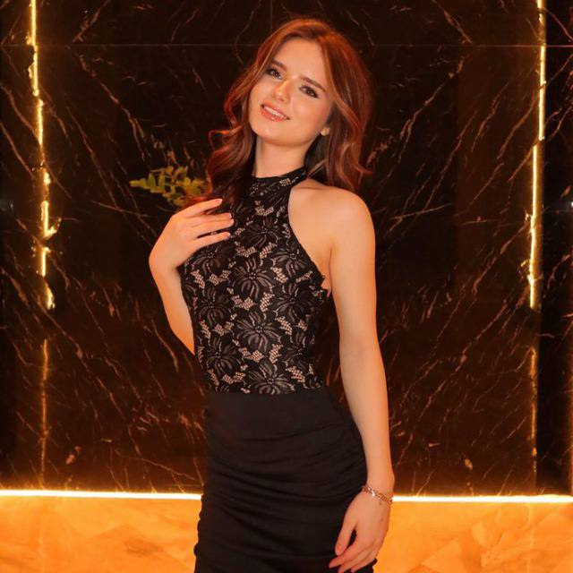
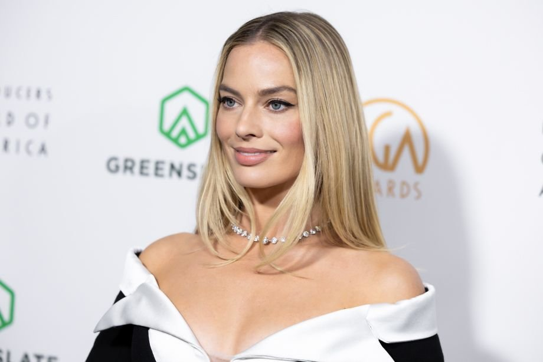

В них влюбляются миллионы.
Женская красота во все времена была предметом восхищения и вдохновения. В современном мире, где рамки стандартов становятся всё более размытыми, практически невозможно назвать дам, которые нравились бы всем. Сегодня, в век социальных сетей, миллионы девушек завоёвывают сердца своей харизмой. И всё-таки среди всех дам планеты есть те, кто из года в год остаётся признанным эталоном. Мы составили список из 10 женщин, которых признали самыми красивыми в мире.
Pion
Дата рождения:2006 год
Награды: «Самая красивая женщина» по версии People (2021), «Икона стиля» на премии Teen Choice Awards (2021), «Самая красивая женщина в мире» по версии Vanity Fair (2022).
Натали — известная актриса, режиссёр и продюсер. В 2011-м Портман получила «Оскар» за лучшую женскую роль в фильме «Чёрный лебедь». Своим секретом красоты Портман называет ЗОЖ и правильное питание. В её рационе чаще всего: овощные салаты, супы, рис, киноа, сыр тофу, орехи и миндальное молоко.

Марго Робби
Дата рождения: 2 июля 1990 года
Награды: «Самая сексуальная женщина» по версии Maxim (2014), «Самая красивая женщина» по версии People (2017), «Самая стильная женщина» по версии British Vogue (2021).
Марго получила широкую известность благодаря роли Харли Квинн в фильме «Отряд самоубийц». В 2017 году актриса была номинирована на премию «Оскар» за лучшую женскую роль в ленте «Тоня против всех». Робби уверена, что секрет красоты кроется в грамотном уходе за кожей и правильном питании.

Кейт Бекинсейл
Дата рождения: 6 июля 1973 года
Награды: включена в список «Самых красивых людей» по версии People (2004), «Женщина года» по версии GQ (2010), «Самая сексуальная женщина мира» по версии Esquire (2017).
Отправной точкой в творческой карьере Бекинсейл стал фильм «Свет в конце тоннеля», за роль в котором она была номинирована на «Золотой глобус». Микс спорта, правильного питания и ухода за кожей — трио, которые помогают Кейт держать себя в форме.
Сальма Хайек
Дата рождения: 2 сентября 1966 года
Награды: «Самая привлекательная женщина» по версии Maxim и FHM (2006), «Женщина года по версии» GQ (2015), «Самая сексуальная женщина мира» по версии Esquire (2018).
Хайек прославилась благодаря фильму «Фрида», в котором сыграла легендарную художницу Фриду Кало. За годы карьеры талантливая актриса была номинирована на «Оскар», «Эмми» и «Золотой глобус», а также получила звезду на Голливудской аллее славы.
Адриана Лима
Дата рождения: 12 июня 1981 года
Награды: «Самая сексуальная женщина мира» по версии Esquire (2007), включена в список «Самых красивых женщин мира» по версии People (2014), включена в список «Самых красивых моделей мира» по версии Maxim (2017).
Адриана — одна из самых известных моделей мира. Она прославилась в 90-е, заработав титул ангела Victoria’s Secret. За годы карьеры Лима неоднократно появлялась на обложках глянца, была лицом известных брендов и принимала участие в сотнях показов.

Скарлетт Йохансон
Дата рождения: 22 ноября 1984 года
Награды: «Самая сексуальная женщина мира» по версии Esquire (2006), включена в список «Самых красивых женщин мира» по версии People (2007), включена в список «Самых стильных женщин мира» по версии Fashion Awards.
Скарлетт — одна из самых известных и высокооплачиваемых актрис современности. Йохансон начала карьеру в кино ещё в детстве и быстро прославилась благодаря фильму «Трудности перевода». За него артистку номинировали на премию «Оскар».

Эмма Уотсон
Дата рождения: 15 апреля 1990 года
Награды: включена в список «Самых красивых женщин мира» по версии People (2010, 2014), «Женщина года» по версии Elle UK (2013).
Эмма наиболее известна широкой публике по роли Гермионы Грейнджер в серии фильмов о Гарри Поттере. Уотсон также снималась в картинах «Красавица и чудовище», «Маленькие женщины» и многих других. Актриса предпочитает естественность яркому макияжу.

Галь Гадот
Дата рождения: 30 апреля 1985 года
Награды: «Мисс Израиль» (2004), включена в список «Самых красивых женщин мира» по версии People (2017), включена в список «Самых красивых женщин мира» по версии Maxim (2017).
На данный момент Галь является одной из самых популярных актрис Голливуда. Гадот также работает в моделинге и сотрудничает с мировыми модными домами по всему миру. В 2016-м на экраны вышел фильм «Бэтмен против Супермена: На заре справедливости», в котором Гадот исполнила одну из главных ролей.

Жизель Бюндхен
Дата рождения: 20 июля 1980 года
Награды: «Самая сексуальная женщина» по версии Rolling Stone (2008), «Икона стиля» на премии Teen Choice Awards (2011).
Жизель — бразильская супермодель и бывший ангел Victoria’s Secret. Карьера звезды подиумов началась в 90-х. Тогда она стала лицом брендов Chanel и Dolce & Gabbana. Бюндхен была первой манекенщицей, которой удалось заработать $1 млн за один контракт.

Анджелина Джоли
Дата рождения: 4 июня 1975 года
Награды: «Самая красивая женщина в мире» по версии журнала People (2006), «Икона стиля» на премии Teen Choice Awards (2009), «Самая красивая женщина» по версии Vanity Fair (2010).
Анджелина прославилась благодаря главным ролям в фильмах «Гладиатор», «Лара Крофт: Расхитительница гробниц». В 2000-м она была номинирована на премию «Оскар» за лучшую женскую роль второго плана в картине «Прерванная жизнь».